|
Chapter Overview In this first chapter, we will construct a SCIRun network [link] to perform a visualization task: rendering of a tetrahedral mesh. Our "net", will consist of three modules: data reader, geometry converter, and renderer. We will read in the datafile from disk, set some rendering properties for the nodes, edges, and faces (e.g. the nodes will be rendered as blue spheres), and will render the geometry to the screen in an interactive viewing window. We will begin constructing a net from scratch as shown, completed, in Figure 1.1. In future chapters we will expand on this network, adding more features and more functionality with each successive iteration. 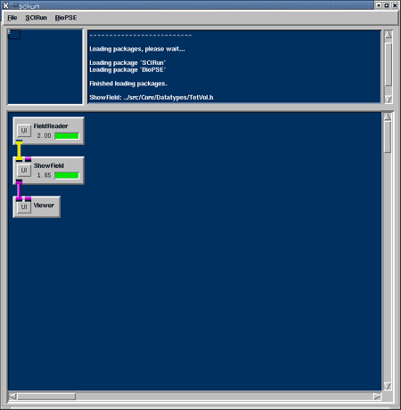
FieldReader User Interface You should set several environment variables in your shell before we begin running SCIRun. First, the SCIRUN_DATA variable should point to the location of the SCIRunData directory on your system. Second, since many of our example networks can be run with a variety of inputs, the SCIRUN_DATASET variable indicates which dataset to load. For example, the network that we construct in this chapter loads a geometric mesh from disk and renders it to the screen. Such a network will work on a wide variety of inputs, and so the SCIRUN_DATASET variable indicates which one the user would like to see. In your Unix shell window, set your SCIRUN_DATA variable to point where you have installed the SCIRun data, and set your SCIRUN_DATASET variable to utahtorso-lowres (as shown in Figure 1.2.)
Having set your SCIRUN environment variables, you are ready to run SCIRun. Change into your SCIRun/src/ directory, and enter the command "./scirun". The SCIRun NetworkEditor window will appear on your screen, as shown in Figure 1.3. 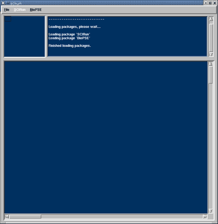
The first module we include in our network will be a FieldReader. To create a FieldReader module, pulldown the SCIRun menu and select DataIO/FieldReader, as shown in Figure 1.3.1.
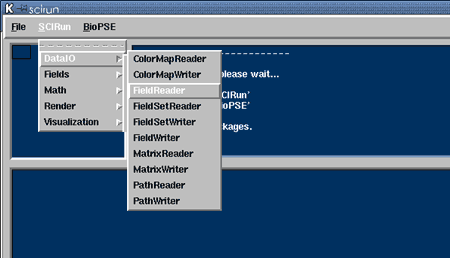
The module then appears on the network map as a rectangular box, as seen in Figure 1.4.
The box has a user interface button that, when pressed, launches a file browser window. You can type, or point-and-click navigate to the utahtorso-lowres/utahtorso-lowres-voltage.tvd.fld input file. This dataset is a low resolution tetrahedral mesh of a human torso. When you select the filename in the file-browser window, and press "OK", the file-browser window will disappear, and the FieldReader module will begin to execute. When the module finishes computing, the progress bar (the rectangle in the lower righthand region of the module) turns green and the module icon displays a number indicating the amount of CPU time required to complete (Figure 1.5). 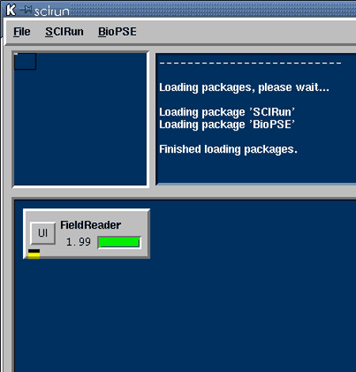
The dataset that we just read-in is called a SCIRun "Field". The definition of a Field is a grouping of information that contains a geometric mesh and a collection of data values associated with that mesh. In this case, we have a tetrahedral mesh with voltages defined at the nodes. We provide a brief overview of Fields below, describing the various types of geometric meshes, datavalues, and mappings aming them that SCIRun supports. Overview of field types SCIRun has eight different geometric meshes available for Fields:
There are, at most, four different places in which data can be stored in a field; at nodes, edges, faces, and cells. The dimensionality of the mesh type limits the available locations. For instance, a TriSurf has no three dimensional cell elements, thus, data cannot be stored at cells in that field type. The following data types can be stored in a field:
Showfield module We will now add a second module to our network. Select ShowField from the SCIRun/Visualization menu. This module is used for visualizing our various field types. The module's User Interface (UI) has options for rendering various geometry from the field, as well as some special options for rendering vector data. ShowField can use color to represent data within the geometry if so desired. For now we will want to just render the nodes of the geometry as blue spheres. Select the UI button on the ShowField module (Figure 1.6). 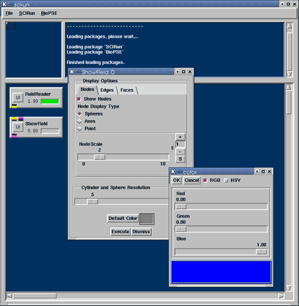
Change the Node Scale to 2 and set the Sphere Resolution to 5. Turn off the display of edges and faces. Select the Edges tab in the ShowField dialogue. Turn off Show Edges. Select the Faces tab. Turn off Show Faces. Now the ShowField module is ready to render the nodes from our input geometry as blue spheres. Hooking modules together Now that you have two modules in your canvas, they need to be connected so that data can flow between them. Output ports in SCIRun are always on the bottom of the module, whereas input ports are always on top. Ports that have the same color may be connected. Each datatype in SCIRun that can be passed through ports has a unique color. Using your middle mouse select the yellow output port on the FieldReader (Figure 1.7.1). You should see the name of the port pop up, as well as lines drawn indicating possible connections. If you then drag your middle mouse towards the ShowField input Field port (the yellow one) eventually you will see the line turn red (Figure 1.7.2). Once it is red you may release the middle mouse button. What you should see is a yellow datapipe connection between FieldReader and ShowField (Figure 1.7.3). 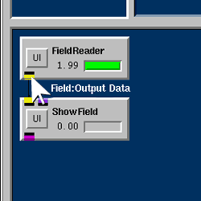
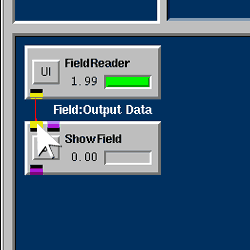
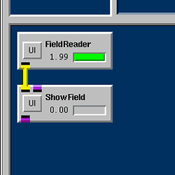
Press the "Execute" button on the ShowField UI to force the module to execute its algorithm. ShowField is expected to work on any of our Field types. We have numerous field types, each that can contain any data type. For example ShowField should visualize TetVol's with double data, or TetVol's with Vector or Tensor data. This is true of TriSurf's and all of our Field types. You may see how this creates a combinatorial explosion of accepted types. As you might quess we have used the C++ Template mechanism to achieve this versatility, but it comes at the price of having to compile all of the types we might ever use into our code base. Our approach is to only compile algorithms that use an exact field type. This information is not known until a module gets its input data, so we wait and compile that algorithm then. We use Dynamic Compilation to accomplish this. So when ShowField executes for the first time, you will notice a delay while it compiles the algorithm specific to the field type and loads it into SCIRun. We cache away this compiled algorithm in a shared library so that it can be loaded the next time you run without delay. ShowField will then execute the newly loaded algorithm passing its results along downstream. Viewer module The last module we will add to this network will be the Viewer module. This module is located under the SCIRun/Render menu. Once the module has been instantiated, connect the output port from ShowField into the Viewer input port. You probably noticed that the Viewer module generated a new input port. Some modules in SCIRun have dynamic input ports, Viewer is an example of this. This allows the Viewer to always accept additional data to Render. To see the graphical rendering of the data that has been passed into the Viewer module, press the Viewer UI button (Figure 1.10).
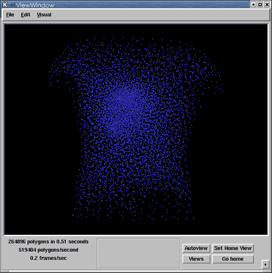
(Text from Rob on navigating in the ViewWindow here... also, add text describing turning on and off faces from ShowField.) Saving and reloading networks The three module network we created above will serve as a foundation for the nets we will create through the rest of this tutorial. As such, we will take a few moments to examine how nets can be saved to disk and then can be reloaded in a future SCIRun session. To save a SCIRun network (Figure 1.11), pull down the File menu bar from the top of the SCIRun window, and select "Save". A file browser will pop up, and you will be prompted to choose a location and filename for your net. By convention, we keep most nets in the SCIRun/src/nets/ directory, but you can store them in whatever location is most convenient for you. For this example, let's store the net as SCIRun/src/nets/show-torso-mesh.net (we use the .net suffix for SCIRun network files).
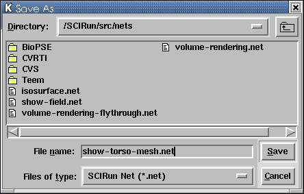
Now, quit out of SCIRun and restart it. To load in the saved net (Figure 1.12), pulldown the "Load..." option from the File menu bar, and select SCIRun/src/nets/show-torso-mesh.net The net should reload into SCIRun, just as it was when you saved it. If we change something (e.g., rotate your view in the ViewWindow or change the rendering color of the nodes in ShowField), then we have two options if we want to re-save our net. First, we can overwrite the existing show-torso-mesh.net file by simply pulling down File -> Save. Alternatively, we can save it to a new file using File -> Save As... For more information on the File menu options (such as Insert and Clear), please see Section XXX of the User's Manual. 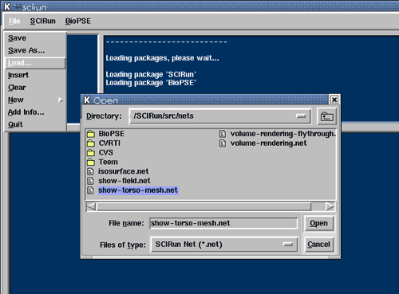
|